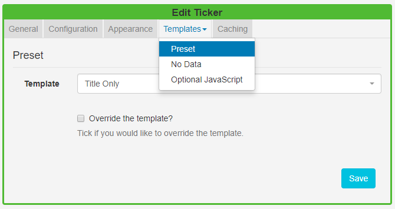
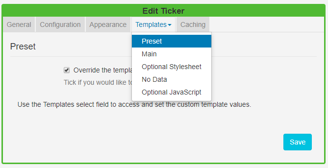

Ticker
The Ticker Widget allows dynamic Feed content to be added to a Layout. The Ticker module primarily consists of a data source location and a template to apply to the retrieved data.
Click on the Ticker Widget on the toolbar, add / drag to the target Region.
If you are using 1.8 please use the following link: Ticker 1.8
General
- Provide an optional name
- Choose to override the default duration
- Opt to extend the duration by the number of items.
Use with caution as this can create long-running media items. Use in conjunction with ‘Number of items’ to limit this.
Configuration
-
Specify the Feed URL.
- Choose how many RSS items should be returned.
- Select to start with items from the beginning or end of the list.
- Random feeds work offline; the entire feed is parsed, rendered and downloaded to the Player and then sorted in a random fashion for display. We use a Durstenfeld shuffle to randomise the order of items. Randomise works on the full feed, "Number of items" and "Take items from" options.
- Display a Copyright notice at the end of the feed.
- Opt to display returned results side by side.
- Apply a Date Format to apply to all returned date results.
- Include a comma-separated list of attributes that will not be stripped from the incoming feed.
- Include a comma-separated list of HTML tags to be stripped from the feed.
- Select to disable the date sort for the feed.
Appearance
- Optionally select a background colour
- Use the drop-down menu to select an Effect to be used to transition between items.
- Set the Speed for the selected effect.
- Select the direction of the text in the feed to use, right to left or left to right.
- Enter how many Items should appear on each page, if an effect to split items has been selected.
Templates
Select Preset Templates or provide your own using JavaScript.

Preset
- Use the drop-down to select an appropriate template.
- Choose to Override the selected template.
By selecting to Override the Template you can enter your own text, html and CSS by using the templates available from clicking on the Templates tab.

Toggle on the Visual editor to use the inline editor.
A special notation is available where the User can specify the Tag|Namespace within the feed for SFC Technology to extract content.
Optional Style Sheet
This is applied to the entire Ticker media item when shown on Displays.
This is intended for advanced users to ‘tweak’ the CMS generated output.
No Data
Use the No Data template to include a message to display when there is no data returned from the source.
Caching
Players can cache the content of this media type to prevent repeated downloads and off-line playback. Keep this number as high as possible.
Additional Information
SFC Technology should accept any date format that is in a correct PHP date format, the following characters are recognised and can be used:
| Format Character | Description | Example returned values |
|---|---|---|
| Day | ||
| d | Day of the month, 2 digits with leading zeros | 01 to 31 |
| D | A textual representation of a day, three letters | Mon through Sun |
| j | Day of the month without leading zeros | 1 to 31 |
| l | (lowercase ‘L’) A full textual representation of the day of the week | Sunday through Saturday |
| N | ISO-8601 numeric representation of the day of the week (added in PHP 5.1.0) | 1 (for Monday) through 7 (for Sunday) |
| S | English ordinal suffix for the day of the month, 2 characters | st, nd, rd or th. Works well with j |
| w | Numeric representation of the day of the week | 0 (for Sunday) through 6 (for Saturday) |
| z | The day of the year (starting from 0) | 0 through 365 |
| Week | ||
| W | ISO-8601 week number of year, weeks starting on Monday (added in PHP 4.1.0) | 42 (the 42nd week in the year) |
| Month | ||
| F | A full textual representation of a month, such as January or March | January through December |
| m | Numeric representation of a month, with leading zeros | 01 through 12 |
| M | A short textual representation of a month, three letters | Jan through Dec |
| n | Numeric representation of a month, without leading zeros | 1 through 12 |
| t | Number of days in the given month | 28 through 31 |
| Year | ||
| L | Whether it’s a leap year | 1 if it is a leap year, 0 otherwise. |
| o | ISO-8601 year number. This has the same value as Y, except that if the ISO week number (W) belongs to the previous or next year, that year is used instead. (added in PHP 5.1.0) | 1999 or 2003 |
| Y | A full numeric representation of a year, 4 digits | 1999 or 2003 |
| y | A two digit representation of a year | 99 or 0 |
| Time | ||
| a | Lowercase Ante meridiem and Post meridiem | am or pm |
| A | Uppercase Ante meridiem and Post meridiem | AM or PM |
| B | Swatch Internet time | 000 through 999 |
| g | 12-hour format of an hour without leading zeros | 1 through 12 |
| G | 24-hour format of an hour without leading zeros | 0 through 23 |
| h | 12-hour format of an hour with leading zeros | 01 through 12 |
| H | 24-hour format of an hour with leading zeros | 00 through 23 |
| i | Minutes with leading zeros | 00 to 59 |
| s | Seconds, with leading zeros | 00 through 59 |
| u | Microseconds (added in PHP 5.2.2). Note that date() will always generate 000000 since it takes an integer parameter, whereas DateTime::format() does support microseconds if DateTime was created with microseconds. | 654321 |
| Timezone | ||
| e | Timezone identifier (added in PHP 5.1.0) | UTC, GMT, Atlantic/Azores |
| I | (capital i) Whether or not the date is in daylight saving time | 1 if Daylight Saving Time, 0 otherwise. |
| O | Difference to Greenwich time (GMT) in hours | +0200 |
| P | Difference to Greenwich time (GMT) with colon between hours and minutes (added in PHP 5.1.3) | +02:00 |
| T | Timezone abbreviation | EST, MDT … |
| Z | Timezone offset in seconds. The offset for timezones west of UTC is always negative, and for those east of UTC is always positive. | -43200 through 50400 |
| Full Date/Time | ||
| c | ISO 8601 date (added in PHP 5) | 2004-02-12T15:19:21+00:00 |
| r | » RFC 2822 formatted date | Thu, 21 Dec 2000 16:01:07 +0200 |